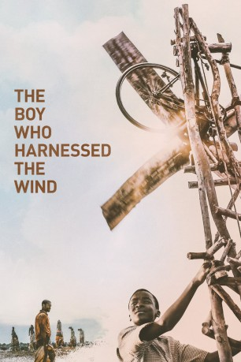

gesehen am 29.04.2019
gesehen am 29.04.2019Alternativ: Boy Who Harnessed the Wind, The (Originaltitel) gesehen am 29.04.2019
 
 IMDB-Wertung: 7.6 / 10
IMDB-Wertung: 7.6 / 10  Metascore:
Metascore: 
Williams Vater Trywell (Chiwetel Ejiofor) hatte einst nicht die Möglichkeit, die weiterführende Schule in seinem malawischen Heimatdorf zu besuchen – sein 14-jähriger Sohn William (Maxwell Simba) soll es besser haben. Auch er mag zwar nicht auf die wohlhabendste Schule der Gegend gehen, bekommt dort aber schon früh mit auf den Weg gegeben, dass jeder sein eigenes Schicksal in den Händen hält. Als er schließlich ein zwölf Meter hohes Windrad baut, mit dem sich Strom erzeugen lässt, verändert er zunächst lediglich das Leben der Menschen in seinem Dorf zum Positiven. Nachdem er den Alltag in einem der ärmsten Länder der Erde aber ein kleines Stück besser gemacht hat, schlägt seine Geschichte im Internet schnell hohe Wellen. Und schon bald gilt William als regelrechter Volksheld und Symbol für große Veränderungen, die auch mit kleinen Mitteln erzielt werden können.
Jahr: 2019
Dauer: 113 Minuten
FSK:
Land: England Studio: NetflixTonspuren: DD5.1 - ,
Untertitel: Englisch, Deutsch,
Auflösung: 1080p (1920x1080) Größe: 4085 MB
Genre: Drama
Regisseur: Chiwetel Ejiofor
Drehbuch: Chiwetel Ejiofor, William Kamkwamba, Bryan Mealer
Soundtrack: Antonio Pinto
Darsteller:
 Chiwetel Ejiofor als Trywell Kamkwamba
Chiwetel Ejiofor als Trywell Kamkwamba Aïssa Maïga als Agnes Kamkwamba
Aïssa Maïga als Agnes KamkwambaDatei: X:\2019(G-M)\Junge, der den Wind einfing, Der (2019, FSK, 1920x1080).mkv seit 03.04.2019
Festplatte: HD 2018(G-Z)-2019(A-Z)
 Es gibt insgesamt 47 Filme in der Gruppe '2019(G-M)'
Es gibt insgesamt 47 Filme in der Gruppe '2019(G-M)'